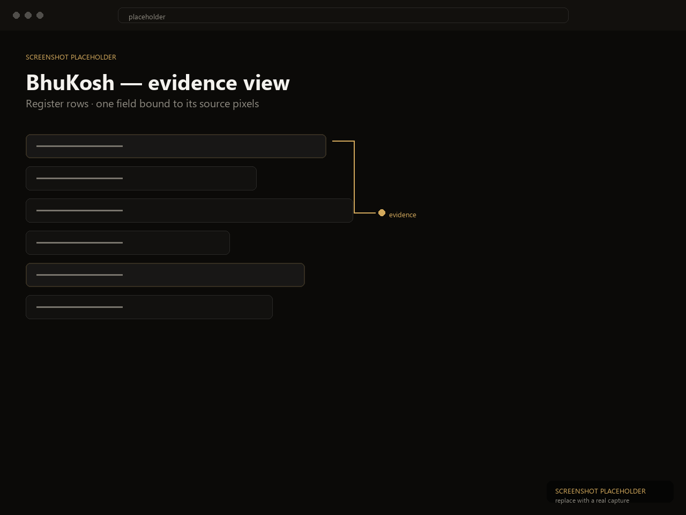

BhuKosh
Smart India Hackathon 2026 · FlagshipProblem
Land records in India exist mostly as scans of handwritten registers, in multiple Indian scripts. Digitization demos stop at "the AI read the text" — but land records demand the harder question: can you trust what was read, and can you prove it?
My contribution
I designed and built the system end to end: the evidence-binding model that ties every extracted value to the exact pixels it was read from, the validation rules that catch impossible data before review, and the truth-assurance verdict computed from independently checkable signals — never the model's own opinion. The live app and OpenAPI-documented service are deployed and walkable in about a minute.
System design
OCR and document extraction feed a validation layer; human corrections loop back to teach the extractor. Every decision — machine or human — lands on a tamper-evident audit chain, so the final record carries its own justification.
Key trade-off
Automation versus accountability. A faster pipeline that can't show its work is useless for land records, so BhuKosh deliberately spends effort on evidence capture and audit rather than raw extraction speed.
Outcome
The system is live with a working app and documented API. The 60-second demo path — sign in as checker, open a pending record, click Evidence, check assurance — runs on the deployed service today.
Try it: sign in as checker / checker-dev → open a pending record → click Evidence, then Check assurance.
